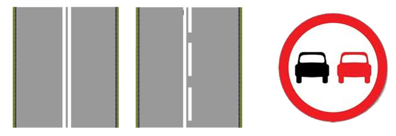
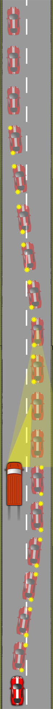

When thinking of overtaking a slower moving vehicle on a single laned road, ask yourself three sets of questions:
Is it necessary?
- Is the vehicle to be passed going that much slower than the speed limit?
- Will you be turning off soon?
- Is the vehicle to be passed likely to turn off?
Is it legal?-Don’t overtake near a pedestrian crossing or when you see these markings or signs:

Where there are double white lines, you must not cross them to overtake if the line closest to you is solid (unless passing a stationary vehicle, cycle, horse or road maintenence vehicle which is travelling at 10mph or less).
Is it safe?
- Where there is oncoming traffic, your closing speed is both of your speeds combined, potentially very fast!
- Avoid overtaking where there are junctions ahead.
- Don’t overtake if you can’t see clearly ahead due to:
-Bends
-Brow of a hill
-Dips in the road
-Poor weather conditions
Procedure
Mirrors-Main and right.
Position-Keep a good distance from the vehicle you need to pass maintaining the appropriate stopping distance for the speed you’re travelling at. Move a little right for a better view but not over the centre line.
Speed-Consider a lower gear to provide the power you may need to pass quickly.
Look-Look well ahead, considering all of the points above.
Mirrors-If it’s good to go, then check your main and right mirror again. Beware of traffic passing you.
Signal-Use a right signal for the benefit of the vehicle you’re passing, if nobody else.
Manoeuvre-Use plenty of gas to get past quickly, allowing at least 1.5metres(6ft) from the side of the vehicle. Consider a left signal if you can see the vehicle in your left mirror and move back over smoothly when you can see both of it’s headlights in your Interior mirror.

The diagram does not represent the actual distance covered through this manoeuvre, as the green van is moving forward throughout. The distance spent on the wrong side of the road can be considerable, especially at higher speeds, so factor this into your decision to overtake.